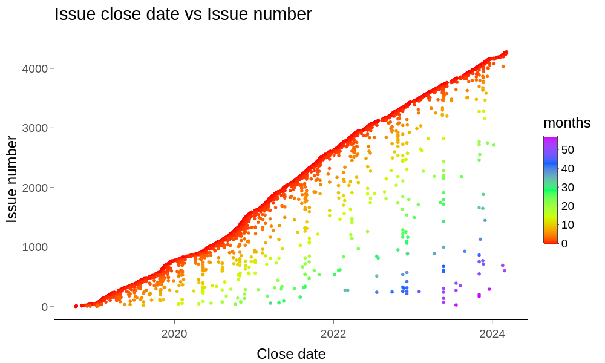

Here are some various projects that I've worked on
Bioinformatics
- graphgenomeviewer BCC2020 hackathon project to visualize GFA graph genome files (2020)
- jbrowse 1 and jbrowse 1 plugins such as multibigwig, multivariantviewer, and more
- jbrowse 2
See also my google scholar for publications
Awesome lists
I like to keep track of various awesome or odd or interesting things in these repos. Please add your favorites with PRs :)
- oddgenes
- genomesignals
- awesome-jbrowse and awesome-jbrowse2
- awesome-genome-visualization
- technical-oddities
Visualizers
- github burndown a shiny app to plot "burndown" style statistics on github issues (2021)
- githubgraphjs visualize your Github Actions build times (2020)
- travigraphjs visualize your travis-CI build times (2019)
- tumblrgraph visualize tumblr reblogs with cytoscapejs (2017)
- resort visualize sorting algorithms (2017)
- ontograph visualize ontology (OBO) files (2016)
Dotfiles/setup
- dotfiles - also has various other details on my setup
Code/art
- sm u20 - A submarine inspired audio/visual page (2022)
- nightskies - An audio/visual webpage (2022)
- interaction shadow - An noise/visual webpage (2021)
- reclaimed space - A visual webpage (2021)
- spiralzone - A visual webpage (2021)
- logistic_chaos_map logistic map fractal viewer, using Rust + WASM + React (2020)
- myloveydove.com - a page for our dixie (RIP) a "serverless" website built with AWS lambda + S3 code (2020)
Games
- gratiotquest multi-player websocket RPG where you are a pheasant running around a MS Paint world (2018)
- slap happy retrofitted a arcade cabinet with a raspberry pi (2018)
Coursera classes
- Experimental Genome Science, University of Pennsylvania 2013, statement of completion
- Computing for Data Analysis, John Hopkins 2013, statement of completion, with distinction
Gallery

MAFViewer plugin for JBrowse 1 viewing multiple genome alignment of C. elegans

GWASViewer for JBrowse 1

Tumblrgraph showing the reblog graph

Ontograph showing gene ontology terms
Github burndown chart showing the closing of issues over time
A high-resolution export of the logistic map fractal from my logistic_chaos_map renderer (full res)
{kind=link}